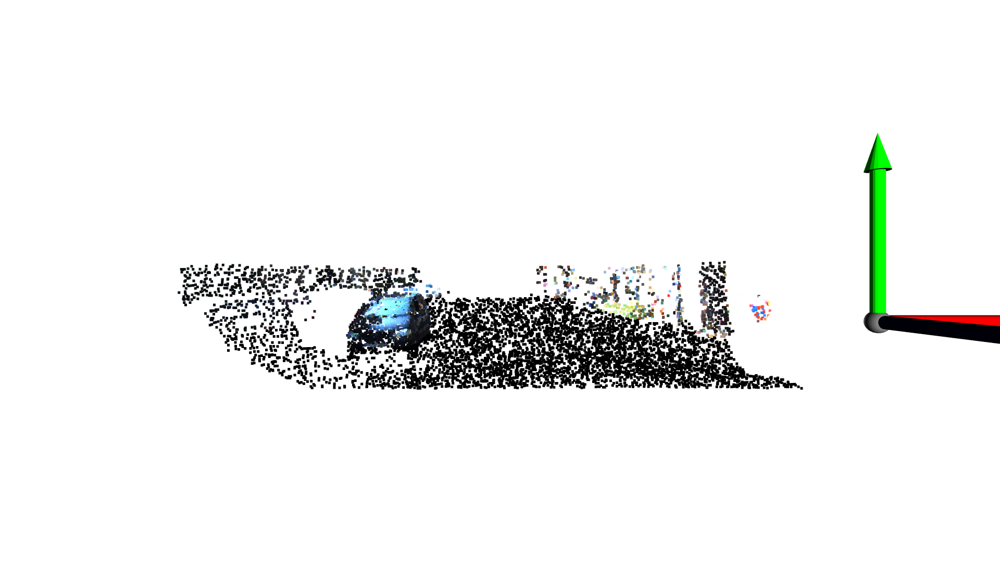

Distributed camera re-identification
Detection, feature extraction and identity matching across an edge–server system.
Explore the project ↗Computer vision is my main interest. My work includes re-identification, biometrics and camera-based systems.
Detection, feature extraction and identity matching across an edge–server system.
Explore the project ↗Research on hands and face biometrics, including first-author work on Deep-HFID and a co-authored hand-geometry paper.
Read the publications ↗Developed a HoloLens 2 interface in Unity and C#, connecting operator input and robot telemetry through MQTT/ROS. The work included a steering visualisation, connection-state handling and emergency-stop behaviour.
This exercise projects LiDAR into image space and explores camera colour information and cross-attention visualisations.

A group project connecting image undistortion, camera poses, feature correspondences and depth-based reconstruction.
View the project ↗You can email me about a job, a PhD opportunity, or a project you’d like to discuss.